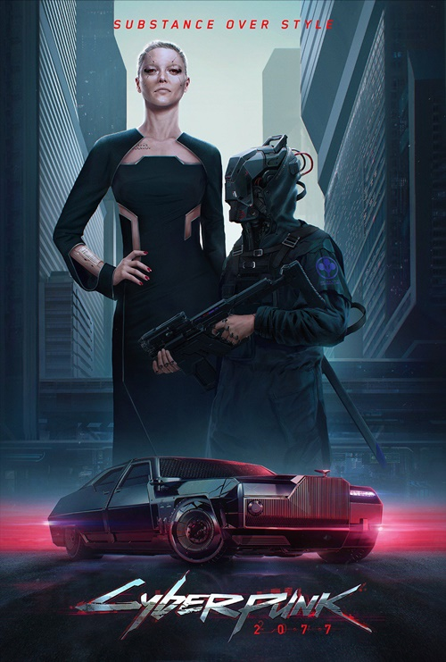
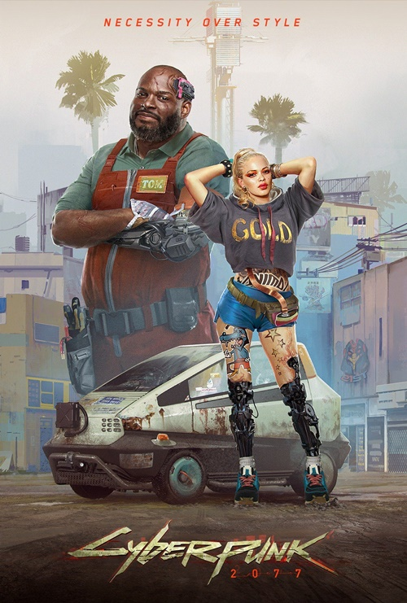

PROLOGUE
The player character V, is contracted along with Jackie Welles, to steal an important piece of technology from the Arasaka Corporation - know as the chip of immortality - by fixer Dexter Deshawn. The duo manage to infiltrate the megacorp and steal the device but the plan goes awry and Jackie appears to die. After meeting with Dexter, V is betrayed and left for dead in a landfill, but manages to survive - possibly in-part due to the chip of immortality - and is haunted by the digital-ghost of iconic Rockerboy, Johnny Silverhand.
The Corpo-Rat
V starts in the Arasaka Tower, where Arthur Jenkins gives the player a job to take out another corporate employee. The player arrives at Lizzie's Bar by AV and is accosted by several basketball players, whom they almost crushed by conducting an illegal landing on the basketball court. V enters the establishment and meets up with their old friend Jackie Welles.
The Nomad 
The player, a lone nomad on their way to Night City, has car issues on the border to the badlands and is forced to seek the services of a local mechanic. V managed to fix the vehicle before they are confronted by the local Sheriff as they continue on towards Night City.
Street Kid

The player is running a job for Kirk Sawyer, who provides V with the technology to steal a high-end Rayfield Aerondight owned by Kaoru Fujioka. V enters the car before they are stopped and held at gunpoint by Jackie Welles, whom also intends to steal the car for their own purposes. Before he is successful an NCPD squad show up and bust the pair. The squad is lead by Jackie's childhood friend, Inspector Stints, who also recognizes V. Kaoru - an Arasaka employee - shows up and orders Stints to kill the pair and dump their bodies out at sea as he does not wish to see them go to trial.